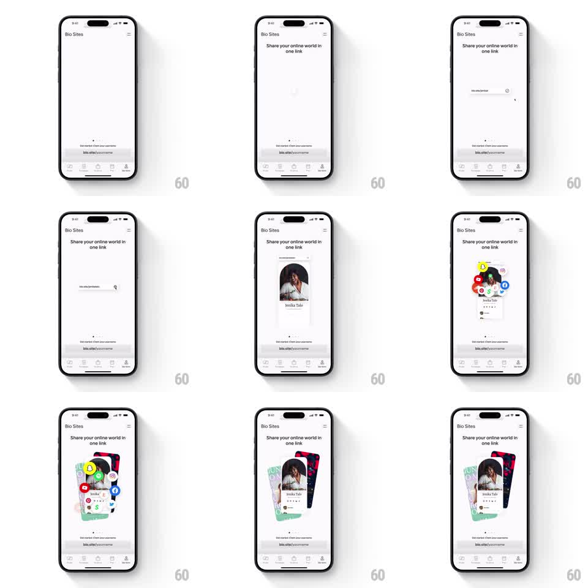

Media
Frame-by-frame

Rebuild this animation 1:1: Unfold's Bio Sites intro - a username text input types itself, morphs into a profile card, bursts with social platform icons, then settles into a layered fan of profile cards behind it.

Rebuild this animation 1:1: Unfold's Bio Sites intro - a username text input types itself, morphs into a profile card, bursts with social platform icons, then settles into a layered fan of profile cards behind it.
## Integration
Integration: stack-agnostic spec - springs given as stiffness/damping, timed motions as duration + curve; map every value to your framework and animation library of choice.
## Scene
Light page: top bar ("Bio Sites", hamburger), headline "Share your online world in one link", center stage (input -> profile card -> card fan), caption "Get started. Claim your username" + "bio.site/yourname" link, tab bar.
## Motion spec
Pattern: morphing object transformation, ~4s.
- A rounded text input fades in and types "bio.site/yourname" (60ms/char) with a live cursor.
- The input's container morphs (height + corner radius tween, 400ms, ease-in-out) into a profile card: photo, name, link rows crossfade in as the frame grows.
- 5-6 social icons (Snapchat, Instagram, YouTube, Pinterest, Facebook) burst out from the card's center on arc paths (spring ~260/16), landing in a loose halo around the photo, each at a small random tilt.
- Two more profile cards slide in behind the main card, rotated +-8deg and offset down 16px, forming a layered stack (400ms, staggered 100ms).
- Header, caption, and tab bar never move.
## Calibration
- The input-to-card morph animates the container geometry, not a crossfade between two views - the continuity is the point.
- Icon burst springs have low damping so icons wobble once before resting; stiff springs read as static placement.
## Reduced motion
Input crossfades to the finished card stack with icons in place (400ms); no burst.
## Don't miss
- Social icons orbit the profile photo, not the card's geometric center.
- The card fan keeps the main card fully readable; back cards peek from behind, never cover content.